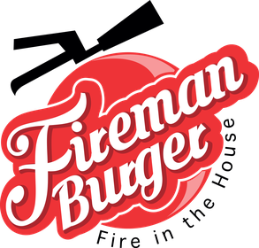

الطزاجة
لحم محضّر يومياً وخضار طازجة، بمواصفة استلام وتخزين مكتوبة لكل مادة.

علامة وجبات سريعة انطلقت عام 2017 تحت مظلة سيفنز غروب، مبنية على البهارات والصلصات الحارة من مواد نقية عالية الجودة — وعلى مطبخ مفتوح تشوف فيه اللهب وأنت واقف.
ليست شعارات تسويقية — هي المعايير التي يُقاس عليها كل صنف قبل أن يدخل القائمة.
لحم محضّر يومياً وخضار طازجة، بمواصفة استلام وتخزين مكتوبة لكل مادة.
بهارات وصلصات مطوّرة داخلياً، وسلطات ومقبّلات مصمّمة لتناسب كل نوع برغر في القائمة.
الزبون يركّب ساندويشته كما يحب — نوع اللحم، الإضافات، ودرجة الحرارة.
فايرمان برغر مفهوم وجبات سريعة عالي السرعة والدوران، مصمَّم ليعمل بفريق صغير ومساحة محدودة دون أن ينخفض مستوى الجودة أو الخدمة.
الهوية البصرية والديكور — الخارجي والداخلي — مبنية على فكرة مركز الإطفاء: الأحمر، والمعدن، والخطّاف، ورجل الإطفاء الذي يحبّه الأطفال قبل الكبار. والقائمة تُختم بتشكيلة من الحلويات الطبيعية والعصائر الطازجة.
خلف الشباك المفتوح منظومة تشغيل كاملة: وصفات بمقاديرها، توزيع مراكز عمل، ووقت تحضير معياري لكل صنف. هذا ما يجعل الفرع الجديد قادراً على تكرار نفس النتيجة من يومه الأول.
لقطات من التحضير والشواء والتقديم اليومي.